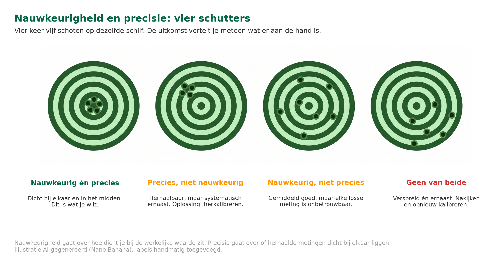
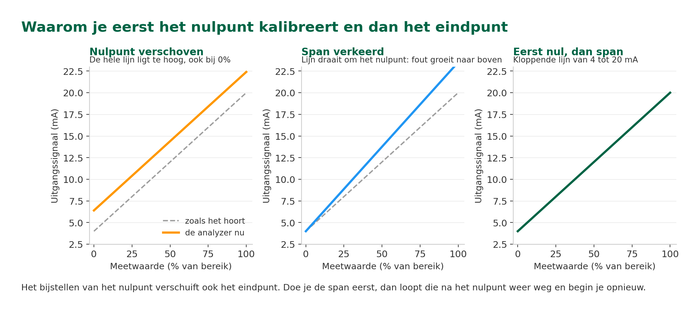
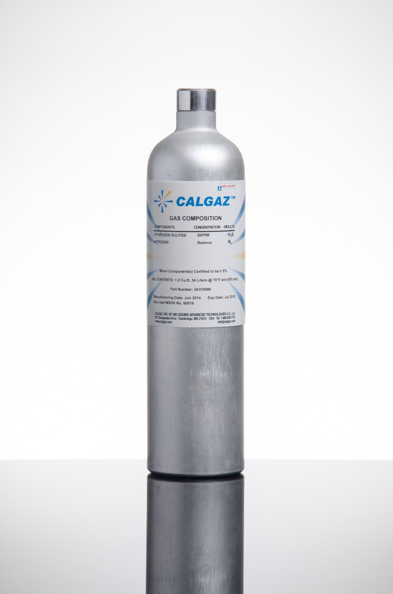
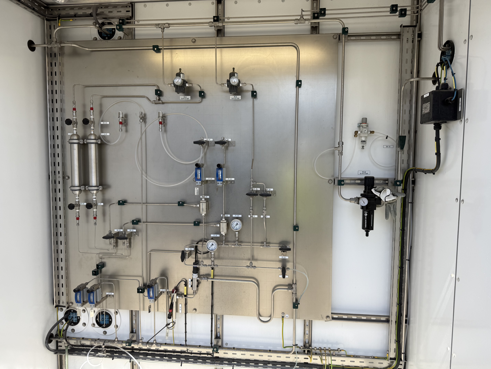
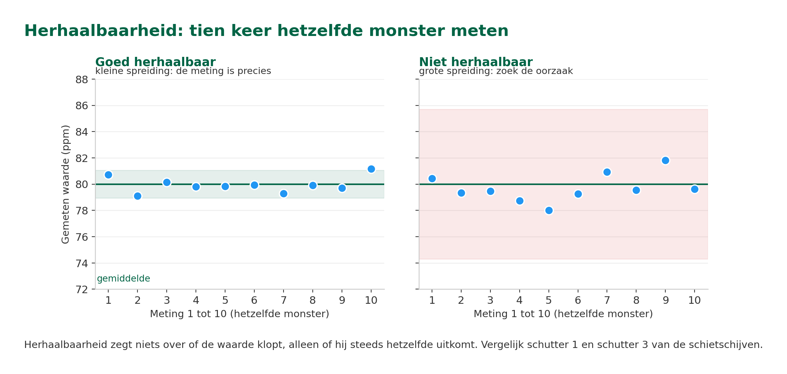
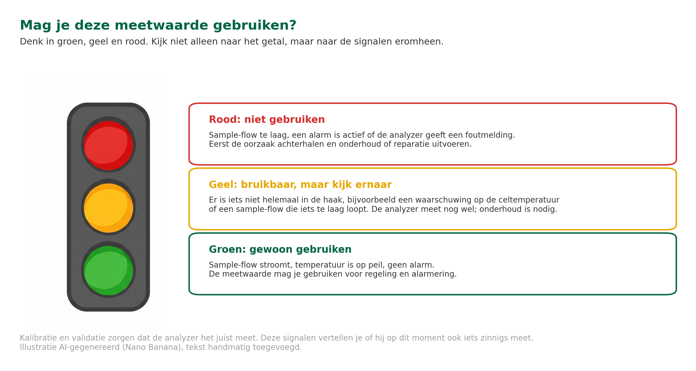
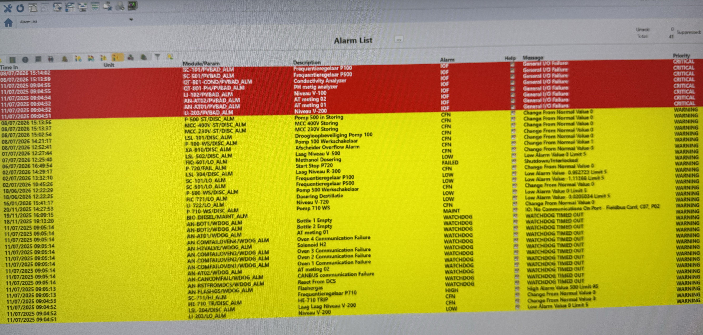

ANA – Module 4
1.1 Leerdoelen
Na het volgen van dit hoofdstuk kun je:
- Uitleggen wat het verschil is tussen nauwkeurigheid en precisie bij analytische metingen
- Beschrijven hoe kalibratie van analyzers werkt en waarom je dit regelmatig doet
- Voorbeelden geven van hoe validatie in de praktijk wordt toegepast bij industriële analyzers
- Beslissen of je op basis van een validatieresultaat wel of niet moet kalibreren
- Beschrijven wat er bij een grote validatie van het hele meetsysteem wordt gecontroleerd, en wanneer zo’n validatie nodig is
- Uitleggen waarom je een meetwaarde pas mag vertrouwen als ook de signalen eromheen in orde zijn
1.2 Van weegschaal tot analyzer: Waarom kalibratie en validatie?
De supermarktweegschaal als spiegel voor je analyzer
Stel je voor: je koopt 500 gram kaas bij de kaasboer op de markt. De weegschaal geeft 500 gram aan en je betaalt €6,50. Maar wat als die weegschaal er structureel 50 gram naast zit? Dan betaal je elke keer te veel of te weinig, zonder dat je het weet.
Daarom komt er elk jaar een controlerende instantie langs die de weegschaal controleert met een geijkt gewicht. Hij legt er precies 1 kilogram op. Wijst de weegschaal ook 1 kilogram aan? Dan is hij goed. Wijkt hij teveel af? Dan wordt hij bijgesteld.
Bij analyzers in de procesindustrie werkt het precies zo, maar dan met grotere gevolgen:
- Veiligheid. Wordt een zuurstofanalyzer gebruikt om de verhouding tussen lucht en brandstof in een fornuis te regelen, dan kan een afwijkende meting leiden tot een verkeerde lucht-brandstofverhouding. De verbranding verloopt dan inefficiënt, de emissies kunnen toenemen en in extreme gevallen ontstaat er een onveilige situatie.
- Kwaliteit en kosten. Producten die buiten specificatie vallen worden afgekeurd, wat direct in de portemonnee te voelen is.
- Verkeerde beslissingen. Operators regelen op basis van foute data, waardoor het proces de verkeerde kant op wordt gestuurd.
In Module 2 heb je geleerd dat kalibratie en validatie bij analysetechniek anders worden gebruikt dan bij gewone procesinstrumentatie. In dit hoofdstuk gaan we dieper in op hoe je als technicus kalibratie uitvoert en wat validatie inhoudt, gezien vanuit de analyzer-praktijk.
1.3 Validatie - Kalibratie en frequentie
Het belangrijke verschil tussen deze begrippen
Laten we dat verschil nog even scherp neerzetten, want als technicus moet je weten in welke wereld je opereert.
Bij analysetechniek (analyzers, gaschromatografen, pH-meters):
- Valideren (controleren). Het vaststellen en aantonen dat een systeem, proces of meting correct is voor het beoogde gebruik en betrouwbaar functioneert. In de praktijk van procesanalyzers wordt de term "validatie" vaak ook gebruikt voor een periodieke controle met een bekende standaard.
- Kalibreren (justeren). Je stelt het instrument actief bij ten opzichte van bekende standaarden zodat het correct meet. Dus niet alleen vergelijken, maar ook corrigeren.
- Validatiefrequentie. Hoe vaak je valideert, hangt af van wat de validaties opleveren. Moet de analyzer vaak worden gekalibreerd, dan verhoog je de frequentie, zodat hij niet ongemerkt buiten zijn toleranties gaat meten. Blijft hij steeds netjes binnen de toleranties, dan kun je overwegen het interval te verlengen.
Waarom is validatie van analyzers frequenter?
Analyzers meten de samenstelling van een stof, en soms een fysische eigenschap die daarvan afhangt. Dat is een stuk lastiger dan het meten van één losse procesgrootheid zoals temperatuur of druk. Een temperatuursensor drift langzaam weg, soms pas merkbaar na maanden. Een pH-elektrode kan al binnen enkele dagen afwijken door vervuiling of veroudering.
Daarom is regelmatige validatie bij analyzers geen luxe maar noodzaak. Je stelt het instrument indien nodig opnieuw af met bekende standaarden om er zeker van te zijn dat de meetwaarden weer kloppen.
1.4 Nauwkeurigheid en precisie: Twee verschillende dingen
De schietschijf-analogie
De begrippen nauwkeurigheid en precisie worden vaak door elkaar gebruikt, maar ze betekenen iets heel anders. De makkelijkste manier om het verschil te begrijpen is met een schietschijf.
Stel je voor dat vier verschillende schutters elk vijf keer op een schietschijf schieten. De uitkomst vertelt je meteen iets over hun nauwkeurigheid (zit het raak?) en hun precisie (schieten ze herhaalbaar?). Hieronder zie je de vier typen.
- Schutter 1, nauwkeurig én precies. Alle schoten zitten dicht bij elkaar én dicht bij het midden. Dit is wat je wilt: elke meting geeft (bijna) de juiste waarde. Alle voorwaarden zijn juist en de analyzer is goed gekalibreerd.
- Schutter 2, precies maar niet nauwkeurig. De schoten zitten dicht bij elkaar, maar niet in het midden. De metingen zijn herhaalbaar, maar wijken systematisch af. Dit heet een systematische fout of bias. De analyzer meet consistent, maar de waarde klopt niet. Oplossing: de analyzer herkalibreren.
- Schutter 3, nauwkeurig maar niet precies. De schoten zitten verspreid, maar de gemiddelde waarde is goed. Individuele metingen zijn onbetrouwbaar. Voor procesregeling is dat een probleem, want je hebt elke meting nodig, niet alleen het gemiddelde. Zoek de oorzaak: bij een GC kan dat bijvoorbeeld variatie in het sample-volume of in de druk zijn.
- Schutter 4, niet nauwkeurig en niet precies. De schoten zitten verspreid én niet bij het midden. De analyzer moet nagekeken en opnieuw gekalibreerd worden.

De vier schutters: nauwkeurigheid gaat over raak schieten, precisie over herhaalbaarheid.
Wat betekent dit voor jou als technicus?
- Nauwkeurigheid (accuracy). Hoe dicht zit de gemeten waarde bij de werkelijke waarde? Een nauwkeurige meting heeft een kleine systematische fout.
- Precisie (precision). Hoe dicht liggen herhaalde metingen bij elkaar? Een precieze meting is herhaalbaar, ook al klopt de absolute waarde misschien niet.
Een analyzer die precies maar niet nauwkeurig is, kun je herkalibreren. Het probleem is dan een verschoven nulpunt of schaling. Een analyzer die nauwkeurig maar niet precies is, heeft een fundamenteler probleem. Dan moet je de oorzaak zoeken: vervuiling, slijtage, of instabiele condities.
Wat is het verschil tussen nauwkeurigheid en precisie?
A) Nauwkeurigheid is herhaalbaarheid, precisie is dicht bij de werkelijke waarde
B) Nauwkeurigheid geldt voor gasanalyzers, precisie voor vloeistofanalyzers
C) Twee woorden voor hetzelfde: allebei zeggen ze hoe goed een analyzer meet
D) Nauwkeurigheid is dicht bij de werkelijke waarde, precisie is herhaalbaar
📖 Praktijkvoorbeeld: Zuurstofanalyzer in een fornuis
Een zuurstofanalyzer meet het zuurstofgehalte in de rookgassen van een fornuis. De streefwaarde is 3,0% O₂.
Situatie A: precies maar niet nauwkeurig.
De analyzer meet steeds: 3,8%, 3,7%, 3,9%, 3,8% en 3,7%. De metingen liggen dicht bij elkaar (precies), maar ze liggen consistent 0,8% te hoog. Oorzaak: de analyzer is al een tijd niet gekalibreerd en is gaan driften. Oplossing: herkalibreren met een testgas van bekende samenstelling.
Situatie B: nauwkeurig maar niet precies.
De analyzer meet: 2,5%, 3,4%, 2,8%, 3,6% en 3,0%. Het gemiddelde (3,06%) zit dicht bij de werkelijke waarde, maar de individuele metingen springen alle kanten op. Oorzaak: mogelijk een vervuilde meetcel, wisselende gasflow of instabiele elektronica. Oplossing: de oorzaak van de spreiding achterhalen en verhelpen.
1.5 Kalibratie: Hoe stel je een analyzer af?
Wat heb je nodig?
Om een analyzer te kalibreren heb je standaarden nodig met bekende en traceerbare referentiewaarden waarmee je de analyzer instelt. Wat voor standaarden je gebruikt, hangt af van het type analyzer:
- Gasanalyzers: gecertificeerde testgassen (cilinders met een exact bekende gassamenstelling)
- pH-meters: bufferoplossingen met een exact bekende pH-waarde (bijv. pH 4,0 / 7,0 / 10,0)
- Gaschromatografen (GC): standaardmengsels in gas- of vloeistofvorm met bekende concentraties van de te meten componenten
- Spectrofotometers: referentieoplossingen of filters met bekende absorptie
In Module 2 heb je geleerd over externe standaarden, matrix-matching kalibratie en in-situ kalibratie. Als technicus werk je het vaakst met externe standaarden: een gecertificeerd testgas/vloeistof, een bufferoplossing voor pH of een filter die je aan de analyzer aanbiedt.
Het kalibratieproces: stap voor stap
Bij de meeste analyzers verloopt kalibratie in vijf stappen:
Stap 1 (nulpuntcontrole, ook wel zero): Je biedt de analyzer een gas of vloeistof aan dat de te meten component niet bevat (het 'nulgas' of de 'blanco'). Bijvoorbeeld stikstof (N₂) als nulgas voor een zuurstofanalyzer. De analyzer zou nu 0,0% moeten aangeven.
Stap 2 (eindpuntcontrole, ook wel span genoemd): Je biedt een standaard aan met een bekende, hoge concentratie, bijvoorbeeld een gecertificeerd testgas met 5,0% O₂. De analyzer zou 5,0% moeten aangeven.
Stap 3 (afwijking bepalen): Stel vast of er een nulpunt-afwijking is, een span-afwijking, of allebei.
Stap 4 (bijstellen): Wijkt hij af? Stel dan het nulpunt en de spanwaarde bij op de analyzer.
Let op: bij pH-analyzers heet deze stap meestal geen 'span' maar 'slope' of 'steilheid'. Het principe is hetzelfde, alleen de term verschilt per type analyzer.
Stap 5 (controle): Bied het nulgas of de blanco opnieuw aan. Staat de analyzer nog steeds op de juiste waarde? Dan is de kalibratie geslaagd. Zo niet, dan herhaal je het proces en controleer je nul en span opnieuw.
De analyzer werkt nu met de juiste ingestelde kalibratiepunten. Alle volgende metingen worden op basis van die punten weergegeven.
Altijd eerst het nulpunt, dan het eindpunt! Het bijstellen van het nulpunt beïnvloedt ook het eindpunt. Als je het eindpunt eerst doet en daarna het nulpunt wijzigt, klopt je eindpunt niet meer.

Waarom de volgorde uitmaakt: het nulpunt verschuift de hele lijn, de span draait hem.
Waarom kalibreer je altijd eerst het nulpunt en dan pas het eindpunt?
A) Omdat het eindpunt minder belangrijk is dan het nulpunt
B) Omdat het bijstellen van het nulpunt ook het eindpunt verschuift
C) Omdat nulgas goedkoper is dan gecertificeerd testgas en dat scheelt
D) Omdat de fabrikant die volgorde nu eenmaal voorschrijft
Wanneer valideer en kalibreer je?
- Op vaste intervallen valideer je: dagelijks, wekelijks of maandelijks, afhankelijk van het type analyzer en de historie van afwijkingen.
- Na onderhoud: sensor vervangen, meetcel schoongemaakt, of andere werkzaamheden
- Bij twijfel: als operators melden dat meetwaarden 'raar' doen, of als labresultaten niet overeenkomen met de analyzer
- Na een procesincident: als de analyzer is blootgesteld aan condities buiten specificatie
📖 Praktijkvoorbeeld: pH-analyzer kalibreren
Een pH-analyzer meet de zuurgraad van proceswater. De twee kalibratiepunten heten hier alleen anders: geen zero en span, maar zero point (nulpunt) en slope (steilheid). Dat zijn de twee kenmerken van de glaselektrode. De kalibratie gaat als volgt:
Stap 1 (zero point): De sensor wordt ondergedompeld in een bufferoplossing met pH 7,0 (neutraal). Bij een ideale elektrode levert dit bij 25 °C 0 mV. Dit is het nulpunt van de pH-schaal. De analyzer bevestigt de nulpunt-kalibratie.
Let op: de pH van een bufferoplossing hangt af van de temperatuur. Kijk dus altijd op de bijgeleverde tabel en kalibreer op de waarde die daar bij de gemeten temperatuur staat.
Stap 2 (slope): Nu gebruik je een zure bufferoplossing met pH 4,0. Dit bepaalt de slope van de kalibratielijn, dat wil zeggen hoeveel mV de sensor verandert per pH-eenheid. Een nieuwe glaselektrode heeft een slope van ongeveer 59 mV per pH; de theoretische Nernst-waarde is 59,16 mV per pH bij 25 °C. Neemt de slope in de loop van de tijd af (richting 50 mV per pH of lager), dan weet je dat de glaselektrode versleten is en vervangen moet worden. De slope is dus meteen een diagnose-indicator.
Stap 3 (verificatie): Bied pH 10,0 aan. Staat de meting nu op 10,0? Zo ja: kalibratie geslaagd.
Belangrijke praktijktips: Gebruik bufferoplossingen eenmalig. Schenk ze na gebruik NIET terug in de fles, want dan raakt de buffer verontreinigd en verdund. Controleer altijd de vervaldatum op de bufferfles. Een verlopen of vervuilde buffer kan een afwijkende pH hebben: je kalibreert dan op een verkeerde waarde.
Praktijkvoorbeeld: CO-analyzer kalibreren met testgas
Een CO-analyzer in een rookgaskanaal moet worden gekalibreerd:
1. Nulgas aanbieden: dit kan bijvoorbeeld stikstof of een ander geschikt nulgas zijn dat geen CO bevat. De analyzer moet 0 ppm aangeven.
2. Testgas aanbieden: gecertificeerd testgas met een bekende waarde, bijvoorbeeld 100 ppm CO. De analyzer moet 100 ppm aangeven.
FOTO NOG TE MAKEN — foto 2: pH-elektrode met bufferoplossingen 4, 7 en 10. Drie bufferflesjes met leesbare etiketten inclusief vervaldatum, naast een glaselektrode.
3. Afwijking bepalen: stel vast of er een nulpunt-afwijking is, een span-afwijking, of allebei.
4. Bijstellen: wijkt hij af, stel dan het nulpunt en de spanwaarde bij op de analyzer.
📖 5. Controle: bied het nulgas opnieuw aan. Staat hij nog steeds op 0 ppm? Dan is de kalibratie geslaagd. Zo niet, dan herhaal je het proces.
Let op bij de kalibratiecilinders: Gebruik bij voorkeur alleen gecertificeerde testgassen (NIST- of ISO 17025-traceerbaar). Op het label staat de exacte concentratie, de certificeringsdatum en de vervaldatum. Na de vervaldatum kan de gecertificeerde samenstelling niet langer gegarandeerd worden. Laat het gas ook voldoende doorstromen en stabiliseren voordat je de kalibratie bevestigt.
Tip: Bewaar de kalibratieresultaten altijd, zowel vóór als ná de kalibratie. Zo kun je achteraf aantonen wanneer de analyzer voor het laatst is gekalibreerd en hoe groot de afwijking was. Dit is belangrijk voor audits en kwaliteitscertificering.

Op het label van een gecertificeerde cilinder staan de concentratie, de certificeringsdatum en de vervaldatum.
1.6 Controle (validatie) van het meetsysteem
Waarom controleren we het meetsysteem
Vergelijk het met een nieuwe auto die van de fabriek komt. Voordat hij de weg op mag, wordt niet alleen de motor getest, maar ook de remmen, de airbags, het zicht en het brandstofverbruik onder verschillende omstandigheden. Pas als alles samen klopt, krijgt de auto zijn goedkeuring. Zo werkt het ook bij een analyzer: pas als de hele keten werkt, is het meetsysteem gevalideerd.
Bij een controle (validatie) kijk je dus naar de hele keten:
- Sample conditioning (Module 3): levert het systeem het monster op de juiste temperatuur, druk, schoon en representatief bij de analyzer?
- Monstername: is het product dat je de analyzer aanbiedt echt representatief voor de processtroom?
- De analyzer zelf: is hij nauwkeurig en precies genoeg voor dit specifieke meetdoel, en komt de gemeten waarde overeen met de aangeboden referentiewaarde?
- Matrixeffecten (Module 2): beïnvloeden andere stoffen in het monster de meting?
- Eisen en normen: voldoet het systeem aan wat het proces en de wet- en regelgeving eisen, en aan de standaard testmethode die van toepassing is? Denk aan een ISO-methode (internationaal) of een ASTM-methode (Amerikaans).

Bij een grote validatie kijk je naar de hele keten, dus ook naar dit sample-conditioning-paneel.
Wanneer controleer (valideer) je?
Controleren (valideren) doe je niet voor de lol: het kost tijd en geld. Er zijn drie momenten waarop het toch nodig is:
- Bij de eerste inbedrijfstelling. Een nieuw meetsysteem mag pas data naar de regelkamer sturen als is aangetoond dat het voldoet aan de eisen. Operators en regelsystemen vertrouwen op die waarden, dus je kunt daar geen onzekerheid bij gebruiken.
- Na een grote wijziging. Denk aan een ingrijpende aanpassing van het sampleconditioningsysteem. Zo’n ingreep breekt het eerdere bewijs dat de hele keten samen goed werkt.
- Bij verandering in de procesmatrix. Verandert de samenstelling van het product, dan kunnen andere componenten de meting gaan storen. De hardware werkte prima op het oude sample, maar dat zegt niets over de meetresultaten op het nieuwe.
In de praktijk wordt validatie meestal uitgevoerd door analyzer engineers en/of laboratoriumspecialisten, indien nodig samen met de analyzer leverancier. Als technicus doe je het dus zelden zelf van begin tot eind, maar je speelt wel een rol in de uitvoering: je voert kalibraties uit, sluit testgassen en buffers aan, ondersteunt bij de meetreeksen, en je documenteert wat er gebeurt, en leert ervan.
Hoe valideer je in de praktijk?
Een validatie bestaat uit een reeks tests die samen een compleet beeld geven. Geen enkele test op zich is genoeg: je hebt ze allemaal nodig.
- Nauwkeurigheid. Klopt de meetwaarde? Je biedt gecertificeerde referentiemonsters aan en vergelijkt de respons van de analyzer met de gecertificeerde waarde.
- Precisie (herhaalbaarheid). Zijn de metingen herhaalbaar? Hetzelfde monster bied je tien keer kort achter elkaar aan, en je kijkt hoe dicht de uitkomsten bij elkaar liggen.

Herhaalbaarheid: tien keer hetzelfde monster, en dan kijken hoe dicht de uitkomsten bij elkaar liggen.
- Kalibratiecurve. Klopt de meting over het hele bereik? Je verdeelt referentiemonsters over nul tot volle schaal en kijkt of de punten keurig op de kalibratiecurve liggen. Die curve kan lineair zijn, maar ook kwadratisch of logaritmisch.
- Stabiliteit (drift). Blijft de meetwaarde over langere tijd stabiel? Je biedt met een vast interval hetzelfde controlemonster aan en volgt de uitkomsten. Zo zie je langzame afwijkingen die je bij één meting nooit zou opmerken.
- Matrixeffecten (Module 2). Beïnvloeden bepaalde stoffen in het product de meting? Testgas of -oplossing aanbieden met of zonder storende componenten en de uitkomsten vergelijken.
📖 Praktijkvoorbeeld: Validatie van een nieuwe H₂S-analyzer
Een raffinaderij installeert een nieuwe H₂S-analyzer (zwavelwaterstof) bij een ontzwavelingsinstallatie. Voordat de analyzer in gebruik mag worden genomen, wordt een validatie uitgevoerd:
1. Nauwkeurigheid: er wordt een reeks gecertificeerde testgassen aangeboden, bijvoorbeeld 20, 40, 60, 80 en 100 ppm H₂S, plus een nulgasmeting met stikstof. De afwijking mag bijvoorbeeld maximaal ±2 ppm zijn.
2. Herhaalbaarheid: één testgas van bijvoorbeeld 80 ppm wordt minimaal vijftien keer achter elkaar aangeboden. De spreiding (standaarddeviatie) mag niet groter zijn dan 2%.
3. Kalibratiecurve: met diezelfde reeks van 20 tot 100 ppm wordt gecontroleerd of de meetpunten over het hele bereik netjes op de kalibratiecurve liggen. Een analyzer kan midden in het bereik prima kloppen en aan de uiteinden toch afwijken.
📖 4. Stabiliteit: gedurende langere tijd wordt dagelijks een controlegas van bijvoorbeeld 80 ppm aangeboden. De meetresultaten moeten normaal gesproken binnen plus of min drie keer de eerder vastgestelde standaarddeviatie liggen.
1.7 Een meetwaarde komt nooit alleen: alarmen en datakwaliteit
Tot nu toe ging dit hoofdstuk over de vraag of een analyzer goed gekalibreerd en gevalideerd is. Maar ook een analyzer die perfect is afgesteld, kan op een bepaald moment een meetwaarde geven die je niet zomaar mag vertrouwen. Hoe kan dat? Omdat een analyzer naast de meetwaarde altijd ook signalen geeft over zijn eigen toestand. Pas als ook die signalen goed zijn, weet je of het meetresultaat op het scherm bruikbaar is.
De koffiemachine-analogie
Stel je voor: je koffiemachine heeft een display die 90 graden aangeeft. Mooi, je drukt op de knop voor een kop koffie. Maar er komt niks: je was vergeten water bij te vullen. De thermometer is niet kapot, hij meet keurig de temperatuur van het laatste beetje vocht in het reservoir. Het getal van 90 graden klopt op zich, maar zegt niets meer over of er ook werkelijk koffie gezet kan worden. Pas als je óók naar het 'water bijvullen'-lampje kijkt, weet je wat er aan de hand is. Bij een analyzer werkt het precies zo: de meetwaarde op zich kan kloppen, maar zonder de signalen daaromheen (stroomt er wel monster door? is de meetcel op temperatuur?) weet je niet of die waarde nog iets zegt over het proces.
Welke signalen krijg je naast de meetwaarde?
De meeste industriële analyzersystemen sturen niet één signaal, maar meerdere. Naast het analyseresultaat krijg je meestal ook:
- Sample-flow: stroomt er wel monster door de analyzer? Als de monsterstroom uitvalt, ziet de analyzer al een tijdje hetzelfde gas of dezelfde vloeistof. De meetwaarde blijft dan waarschijnlijk constant en zegt niets meer over wat er nu in het proces gebeurt.
- Temperatuur en druk: veel meetcellen werken alleen goed binnen een bepaalde temperatuur of druk. Een verwarmde meetcel die koud is geworden geeft een onbetrouwbare waarde, ook al lijkt het getal op het scherm normaal.
- Status- en alarmmelding: een aparte melding van de analyzer zelf, "sensor vervuild" of "interne fout". Ook kan de analyzer bijvoorbeeld een automatische validatie uitvoeren. Normaal gesproken wordt het uitgangssignaal tijdens het uitvoeren van de validatie “bevroren”. De operator krijgt hiervan meestal een melding.
In het volgende hoofdstuk lees je dat moderne protocollen zoals HART en Modbus die signalen netjes naast de meetwaarde kunnen meesturen. Bij een 4-20 mA aansluiting heb je daar soms een aparte kabel voor nodig voor bijvoorbeeld digitale status/alarm contacten.
Groen, geel of rood: hoe betrouwbaar is je meting nu?
In de praktijk helpt het om je meetwaarde in drie categorieën te denken, een beetje zoals een verkeerslicht:
- Groen: alle randvoorwaarden zijn in orde. Sample-flow stroomt, temperatuur is op peil, geen alarm. De meetwaarde mag je gewoon gebruiken voor regeling en alarmering.
- Geel: er is iets niet helemaal in de haak (een waarschuwing op de cel-temperatuur, of de sample-flow loopt iets te laag), maar de analyzer meet nog wel. De waarde is nog bruikbaar, maar onderhoud is noodzakelijk.
- Rood: sample-flow is te laag, een alarm is actief, of de analyzer geeft een foutmelding. De meetwaarde mag je niet gebruiken. Als technicus is dit het signaal om eerst de oorzaak te achterhalen en onderhoud of reparatie uit te voeren.

Mag je deze meetwaarde gebruiken? Kijk naar de signalen om de meting heen.
Praktijkvoorbeeld: pH-meting bij een afvalwaterstroom
Een operator belt: "De pH van het afvalwater staat al twee uur op precies 7,2. Dat is wel erg stabiel, klopt dat?" Vroeger zou je misschien als eerste de pH-elektrode willen schoonmaken. Nu kijk je eerst naar de signalen om de meetwaarde heen. Op het DCS-scherm zie je dat de sample-flow al twee uur op nul staat: de monsterpomp is mogelijk uitgevallen. De pH-meter zit in een meetcel met vloeistof die er twee uur geleden in zat, en meet dat keurig. Het getal 7,2 is dus niet "fout", maar gewoon niet meer representatief voor het afvalwater nu. Eerst de monsterpomp herstellen, daarna pas de elektrode beoordelen.

Zo zien analyzer-alarmen eruit in het DCS: rood is een I/O-storing, geel een watchdog-melding.
Een operator meldt dat een pH-meting al uren op exact dezelfde waarde staat. Wat is je eerste check?
A) De elektrode schoonmaken, die is waarschijnlijk vervuild
B) Opnieuw kalibreren met verse buffervloeistof
C) Controleren of er nog monster langs de sensor stroomt
D) De analyzer laten vervangen, hij hangt vast
Wat je hieruit meeneemt: kalibratie en validatie zorgen ervoor dat de analyzer het juist meet. De signalen om de meetwaarde heen vertellen je of de analyzer op dit moment ook iets zinnigs aan het meten is. Als technicus check je in de praktijk altijd allebei.
1.8 Overzicht: Kalibratie en validatie in de analysetechniek
Laten we de twee begrippen naast elkaar zetten, gezien vanuit de analyzer-context:
- Valideren (controleren). Je biedt de analyzer een testgas of controlemonster met een bekende waarde aan en controleert of hij nog binnen de toleranties meet. Dit is je routinecontrole als technicus: op vaste intervallen, na onderhoud en bij twijfel. Eerst controleren, dan pas ingrijpen.
- Kalibreren (aanpassen). Laat de validatie een afwijking buiten de tolerantie zien, dan stel je de analyzer bij met standaarden: eerst het nulpunt, dan het eindpunt. Kalibreren doe je dus niet zomaar standaard, maar op basis van wat de validatie laat zien.
- De frequentie. De validatieresultaten bepalen het interval. Moet je vaak bijstellen, dan ga je vaker valideren. Blijft de analyzer steeds binnen de toleranties, dan kun je overwegen het interval te verlengen.
- De grote validatie. Bij inbedrijfstelling, na een grote wijziging of bij een veranderde procesmatrix controleer je niet alleen de analyzer, maar de hele keten: monstername, sample conditioning en de analyzer samen. Dat gebeurt meestal door analyzer engineers en het lab; als technicus ondersteun je daarbij.
Onthoud de kern: valideren is controleren, kalibreren is aanpassen. Zonder regelmatige validatie weet je niet of je metingen nog kloppen, en zonder goede kalibratie krijg je ze niet meer kloppend.
In Module 1 heb je geleerd hoe purgesystemen en gasdetectoren bescherming bieden tegen giftige en explosieve gassen. Personeel dat werkt in gebieden waar dergelijke gassen aanwezig kunnen zijn, moet kunnen vertrouwen op correct werkende en goed gekalibreerde detectoren. Een fout gekalibreerde detector kan leiden tot onveilige situaties. Kalibratie is daarom niet alleen technisch belangrijk, maar ook essentieel voor de persoonlijke veiligheid.
Heb je feedback op deze pagina? Laat het weten via GitHub.